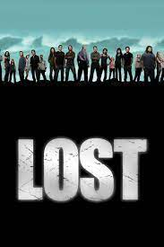

Rate: 9.5/10 Seasons:6

The survivors of a plane crash are forced to work together in order to survive on a seemingly deserted tropical island.
Watch TrailerThe past, present, and future lives of surviving Oceanic Flight 815 passengers are dramatically intertwined as a fight for survival ensues in a quest for answers after crashlanding on a mysterious island. Each discovery prompts yet more secrets, as the hastily-formed colony search for a way off the island, or is this their home?—Chris Cullen